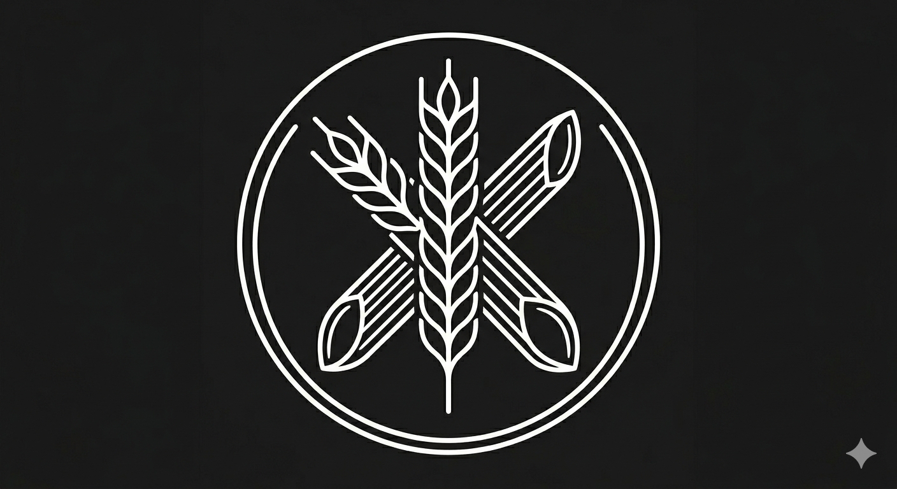

Ground-Crawling Penne
地を這うペンネモンスター教は、ペンネをより地球に普及させ、すべての皿に完璧なアルデンテをもたらすことを目的とした集団です。
私たちは、空を飛ぶ軽薄さではなく、皿の上を力強く這い、濃厚なソースと密接に絡み合うペンネの「低重心な生き様」を理想としています。ペンネの機能美（溝、空洞、切り口）を科学的・宗教的に探求し、人類の食卓に革命を起こします。
表面の溝（Rigate）で多様なソースを抱擁し、異なる文化や価値観と混ざり合います。
高く飛ばず、現実に根ざし,一歩ずつ確実に「アルデンテ」な人生を歩みます。
外側は柔軟に、しかし内側には決して折れない「アルデンテの芯」を保持します。
「迷える子羊たちよ、フォークを捨てよ。ペンネを突き刺し、その重厚なるソースの重みを感じるのだ。」
—— 初代教皇 ペンネ・リガート1世